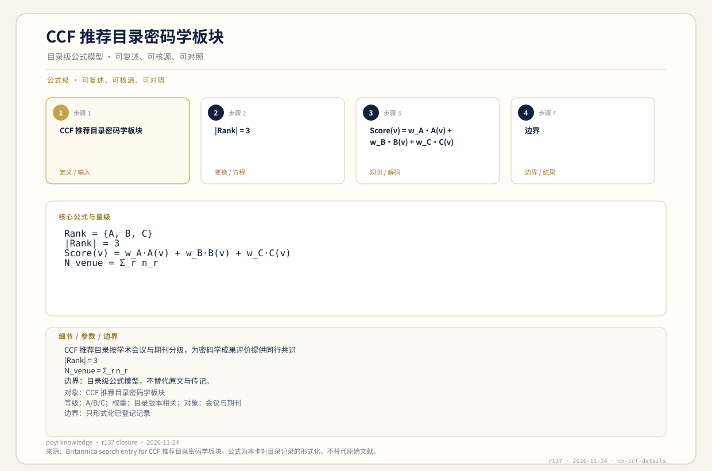

原理与机制
中国密码史：CCF 推荐目录密码学板块（CCF Recommended List for Cryptography）。CCF 推荐国际学术会议和期刊目录设有密码学板块，把密码学会议、期刊按 A/B/C 类分级。该目录被国内高校和科研机构广泛用作成果评价参考，但不是密码学唯一的评价口径。

为什么重要
该条目单列，是因为它把理论基础中的中国密码史节点落到可核证据：有可指认的参与者、可复算的步骤，或有馆藏、档案、标准编号支撑的实物与文本。相邻条目只用于定位，不并入该条目，也不替别条作证明。
应用与实例
1.2.3.4.
边界与攻击面
政策或标准节点若只有二手概述、没有文件编号或实施日期，就只能标为待核；把宣传口径当成技术结论、把标准发布当成全面部署，都会使判断越界。
历史与背景
时间线、证据与争议
登记年份以来源账本为准；背景是理论基础中此前技术、机构与冲突的累积；过程只写有来源支持的参与者、地点与行动；结果写它改变了哪些标准、机器、课程或政策；争议写二手叙述与一手材料的差距。来源包括：Wikipedia search entry for CCF 推荐目录密码学板块；《密码简史：穿越远古 展望未来》（杨义先、钮心忻，电子工业出版社，2020，ISBN 9787121398711）。
不要把“发生过”写成“已证明”，也不要把事件标题扩写成机制结论；没有日期的节点只作逻辑位置。
同名概念的分界
CCF 推荐目录密码学板块只对自身登记对象负责。与相邻条目的名称可能重叠，该条目不把别条的事实并入，也不用一个版本来覆盖另一个版本。
遇到同名对象时先查三项：类型（人物/事件/器物/术语）、时间、来源机构；三项不能同时对上，就当作不同条目处理。
来源等级与未核项
该条目来源账本包括：Wikipedia search entry for CCF 推荐目录密码学板块（Tier 3）；《密码简史：穿越远古 展望未来》（杨义先、钮心忻，电子工业出版社，2020，ISBN 9787121398711）（Tier 2）。
Tier 1/2 只说明来源类型，不等于每条断言都逐页核过；正文中没有来源支持的日期、数量、角色和参数保持空白。二手概述与一手材料冲突时，以一手材料为准；争议不静默覆盖，保留在边界节。
读法：从对象到证据
读 CCF 推荐目录密码学板块 先固定对象：它是什么类型、属于理论基础的哪一段、与哪些条目相邻。再列证据：谁在何时说了什么、locator 在哪、是否为一手材料。最后写边界：哪些结论只是模型关系，哪些仍待核。
不要把目录位置当参数表，不要把标题当定理，也不要把一次示例当普适结论；这三类是该条目明确拒绝的误读。
复核清单
检查 CCF 推荐目录密码学板块 时逐项回答：对象类型是否固定；时间、地点、参与者是否各有来源；文本、器物或机构记录是否区分一手与二手；相邻条目是否被误并；没有来源的空白是否明确留空。五项中任何一项只能靠猜测，就停在“待核”，不把叙事写成证明。
时间与不确定性
CCF 推荐目录密码学板块的年份、参与者、地点和机构必须各有来源；没有日期的节点只作逻辑位置。二手叙述与一手档案冲突时，正文并列保留差异，不静默覆盖。
关系与边界
CCF 推荐目录密码学板块与相邻条目只建立阅读路线，不互相替代；同名对象先按类型、时间、来源机构三项区分。没有来源支持的师承、奖项、任职或设备参数留空。
逐步示例与核验
事件时间线模型
背景 → 过程 → 结果 → 争议。背景写此前技术/制度；过程写可核参与者与时间；结果写后续标准、机器、课程或政策；争议写二手叙述与一手材料的差距。
参考出处
- Wikipedia search entry for CCF 推荐目录密码学板块. https://zh.wikipedia.org/w/index.php?search=CCF%20%E6%8E%A8%E8%8D%90%E7%9B%AE%E5%BD%95%E5%AF%86%E7%A0%81%E5%AD%A6%E6%9D%BF%E5%9D%97
- 《密码简史：穿越远古 展望未来》（杨义先、钮心忻，电子工业出版社，2020，ISBN 9787121398711）. https://book.cppinfo.cn/Encyclopedias/home/index?id=3730464